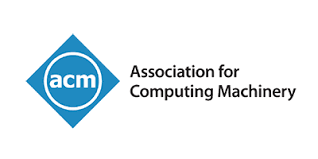

‘Science plus arts multiplied by faith then divided by the number of our ethnic race.’ — Nujabes, feat. Shing02, Luv(sic) pt2
About Myself
I am an AI/Graphics/Robotics/HPC Researcher with international research experience specializing in Physics-informed Machine Learning, Reinforcement Learning, and Graph Learning. Currently pursuing my Master's degree at National Taiwan University 🇹🇼, advised by Prof. Bing-Yu “Robin” Chen.
My research focuses on systematically solving critical problems at the intersection of multiple disciplines. Currently, my interests encompass 3 core areas:
- Visual Computing & Physics Simulation : neural PDE solvers, differentiable physical simulation, CAD, animation
- Embodied Systems : Sim2Real, robotic manipulation, federated learning, sensing
- Audio Signal Processing : DSP, Watermarking
Welcome for any potential collaborations!
I have gained international research experience through internships and collaborations at Aalto University (2026 Aalto Science Institute (AScI) Summer Research Programme; QuML Group @Espoo, Finland 🇫🇮 ; Advisor Prof. Vikas Garg), RIKEN Japan, Center for Computational Science (R-CCS) (2025 R-CCS International HPC Computational Science Internship Program; Large-Scale Digital Twin Research Team @Kobe/Osaka, Japan 🇯🇵 ; Team Principal Prof. Hirozumi Yamaguchi and Prof. Hamada Rizk(Osaka University)), MoonShine Animation Studio (R&D; Dir. Shaune Jan) and Delta Electronics. Further academic collaborations: Prof. Yu-Lun "Alex" Liu (NYCU, Taiwan 🇹🇼), Ziqiu Zeng (NUS, Singapore 🇸🇬), Peter Yichen Chen (UBC, Canada 🇨🇦), Tiantian Liu (Meshy AI, US 🇺🇸), Prof. Xiang "Anthony" Chen (UCLA, US 🇺🇸).
I also worked closely with multiple academic groups during my undergraduate studies and published 8 conference papers in top-tier AI/CS conferences: Urban Science & Computing Lab led by Prof. Hsun-Ping Hsieh, and RAC-Coon (Robot Aided Creation and Construction Research Group) with Prof. Yang-Ting Shen, Prof. Chia-Ching Yen, and Prof. Wen-Yu Su.
All my projects are available on my GitHub page, spanning generative modeling, multi-agent RL, multimodal agents, 3D rendering, and intelligent systems. I actively contribute to the research community as a reviewer for premier conferences including ACM CHI, HRI, CSCW, and WWW.
My interests: graffiti (in legal area), live house/music festival, traveling.
Publications
Selected (4)
LATENT-MARK: An Audio Watermark Robust to Neural Resynthesis
arXiv Preprint, 2026 (Co-1st Author). [PDF]
Accelerating Large-Scale Federated Graph Foundation Model Pre-training for Secure Sensing via Hierarchical Parallelism
ISC High Performance 2026 (1st Author, Research Poster, Just Accepted). [PDF]
Others (6)
Thesis
Research & Work Experience
Honors & Awards
- Secured 3rd Place & Sponsors Award ($30,000) from NXP Semiconductors (Awards).
- Built a microcontroller-based SensorHub (ADI/NXP/Arduino) integrating DHT11/SCD40/PMS5003T via chips communication(I²C/UART); developed calibration tests with real-time logging in HVAC/fan/lighting control linked to Unity digital twin for vision model based crowd regulation.
- Travel support recipient for attending the ISC High Performance conference 2026 (June 22-26, Hamburg, Germany).
- Graduate student travel support recipient ($1,000) for SIGGRAPH Asia 2025 conference (December 16 – 18, Hong Kong).
- Recipient of the graduate student scholarship for the 2025-2026 academic year.
Academic & Community Service

Association for Computing Machinery Conferences- ACM CHI’25
- ACM HRI’25
- ACM CSCW’24
- ACM WWW’25